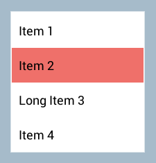
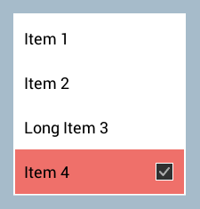
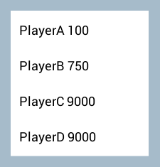

Working with List Data
Introduction
This tutorial will go over how to work with list data within MarkLight. It will show you how to present static and dynamic list data. You'll learn how to customize the look of list items by using item templates and how to bind data to the template. Finally we will go over how to handle item selection and touch on some common list operations such as adding, updating and sorting.There are a number of views that work with list data: List, DataGrid, ComboBox and TabPanel. In this tutorial we will work with the List view as it's the most fundamental view for presenting lists, however, most of the information will be applicable to the other views as well.
Static List
If the list data you want to present is static, i.e. items will not be dynamically added or removed, you can either use a Group or a List view. Group is useful if you want to snug items together horizontally or vertically. The List view provides additional functionality such as selection logic and the option to have items wrap as they reach the boundaries of the list. Here is an example how to create a simple static selectable list using the List view:StaticListExample.xml
<StaticListExample>
<List Width="200">
<ListItem Text="Item 1" />
<ListItem Text="Item 2" />
<ListItem Text="Long Item 3" />
<ListItem Text="Item 4" />
</List>
</StaticListExample>

The items are arranged vertically by default and the height of the list will automatically adjust to the items (unless height is explicitly specified). The items can also contain any content you want:
<ListItem Text="Item 4">
<CheckBox Alignment="Right">
</ListItem>

Dynamic List
Let's assume we want to present a dynamic list of highscores represented by the following data model:Highscore.cs
public class Highscore
{
public string Player;
public int Score;
}
First we need a way to bind the list of highscores to the List view in such a way that it can automatically respond to changes in the list. To do this we need to store the list of highscores using the generic list collection ObservableList<T>. Besides normal list operations (add, insert, remove, etc) this collection provides a mechanism for observers to listen to and respond to changes made in the collection. So our view model containing the list looks like this:
DynamicListExample.cs
public class DynamicListExample : UIView
{
public ObservableList<Highscore> Highscores;
public override void Initialize()
{
// initialize and populate highscores
Highscores = new ObservableList<Highscore>();
Highscores.Add(new Highscore { Player = "PlayerA", Score = 100 });
Highscores.Add(new Highscore { Player = "PlayerB", Score = 750 });
Highscores.Add(new Highscore { Player = "PlayerC", Score = 9000 });
Highscores.Add(new Highscore { Player = "PlayerD", Score = 9000 });
}
}
We now have an observable list called Highscores that can be bound to our list view like this:
DynamicListExample.xml
<DynamicListExample>
<List Items="{Highscores}" Width="200">
<ListItem IsTemplate="True" Text="{#Item.Player} {#Item.Score}" />
</List>
</DynamicListExample>
There are three important things going on here:
-
The first thing we do is to bind the highscore data to the list view:
<List Items="{Highscores}">
-
We inform the List view that the list item is to be used as a template for dynamic data by setting:
<ListItem IsTemplate="True" .../>
-
Lastly we bind item data to the item template:
<ListItem IsTemplate="True" Text="{#Item.Player} {#Item.Score}" />
We use the notation #Item which always points to the current item data being populated by the List view. In this case we bind the item text to a format string containing the player name followed by the score.

We can make it look a bit better by changing the template. Like with the static list example we have the option to create more advanced item templates by adding some content:
DynamicListExample.xml
<DynamicListExample>
<List Items="{Highscores}" Width="250">
<ListItem IsTemplate="True">
<Region Margin="10">
<Label Text="{#Item.Player}" Alignment="Left" FontColor="Black"
FontSize="22" AdjustToText="Width" />
<Label Text="{#Item.Score}" Alignment="Right" FontColor="Black"
AdjustToText="Width" />
</Region>
</ListItem>
</List>
</DynamicListExample>

Adding / Removing Items
Any changes to the list are done through the reference to the ObservableList. Adding and removing items from the list is pretty straightforward. Here are examples of common add/remove list operations:
public void AddAndRemove()
{
// remove item at index
Highscores.RemoveAt(0);
// remove item by reference
var item = Hishscores.Find(x => x.Player == "PlayerB");
Highscores.Remove(item);
// add new item
Highscores.Add(new Highscore { Player = "Player" , Score = 0 });
// add new item at index
Highscores.Insert(0, new Highscore { Player = "Player" , Score = 0 });
}
Updating Items
If an item has been internally modified, e.g. the score on an existing highscore entry has changed, you can notify the list of these changes through the ItemModified method. This ensures that the changed values are propagated to any bound fields:
public void UpdateScores()
{
// scenario #1 - update the player's name on an item
var item = Highscores[0];
item.Player = "New Name";
Highscores.ItemModified(item, "Player");
// scenario #2 - add 100 to all scores
foreach (var highscore in Highscores)
{
highscore.Score += 100;
}
// ... update score on all items
Highscores.ItemsModified("Score");
// scenario #3 - update all fields on an item
var item2 = Highscores[1];
item2.Player = "New Name 2";
item2.Score = 0;
Highscores.ItemModified(item2);
// scenario #4 - update all fields on all list items
Highscores.ItemsModified();
// scenario #5 - update nested object fields on item
var item3 = Highscores[3];
item3.NestedObject.Field1 = "new value";
item3.NextedObject.Field2 = "new value";
// ... only Field1 on the nested object will be updated
Highscores.ItemModified(item3, "NestedObject.Field1");
// ... all fields on the nested object will be updated
Highscores.ItemModified(item3, "NestedObject");
}
List Selection
If you want to be notified when the selection in the list view changes you can add an action handler to the List's ItemSelected view action:
<List Items="{Highscores}" ItemSelected="HighscoreSelected">
public void HighscoreSelected()
{
var selectedHighscore = Highscores.SelectedItem;
// do something with selected item
}
If you want to programmatically set the selected list item you can do so by the SelectedItem or SelectedIndex property on the ObservableList:
public int _nextIndex = 0;
public void SelectNext()
{
// you can set selected by index:
Highscores.SelectedIndex = _nextIndex;
// or set selected by reference:
//var item = Higscores[_nextIndex];
//Highscores.SelectedItem = item;
++_nextIndex;
if (_nextIndex >= Highscores.Count)
{
_nextIndex = 0;
}
}
Sorting List
You can sort the list using the Sort method:
public void SortHighscores()
{
// sort highscores by score (descending)
Highscores.Sort((x, y) => y.Score.CompareTo(x.Score));
// sort highscores by score (ascending)
//Highscores.Sort((x, y) => x.Score.CompareTo(y.Score));
// sort by using default comparer
//Highscores.Sort();
}
Replacing Items
The list operation Replace is used when you want to replace items in the list. The replace operation ensures than any existing generated list item views are reused which saves performance overhead.
public void ReplaceHighscores()
{
// create new highscore list
var newScores = new List();
newScores.Add({ Player = "PlayerX", Score = 999 });
newScores.Add({ Player = "PlayerY", Score = 888 });
newScores.Add({ Player = "PlayerZ", Score = 777 });
// replace highscores with new list
Highscores.Replace(newScores);
// replace single item at index
var score = new Highscore { Player = "PlayerW", Score = 1000 };
Highscores.Replace(0, score);
}